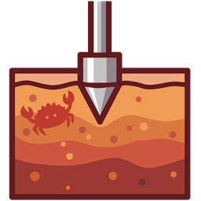

laterite foundationsEvery value is sampled from the strata in the logo — topsoil at the top, bedrock at the bottom. Tap a band to read its token.
The only cool family in the system — warm ground, cool tool.
Stone, not grey — same hue family as the soil. Never pure white or black. Scrolls sideways rather than shrinking.
Severity runs down the strata instead of green-amber-red, and is encoded in form as well as hue — solid fill, 3px stratum tick, hairline stencil. The list still reads in greyscale.
Files come back born-typed — a 2DP heading is a float, a DT a datetime, an ID a string — so polars, SQL and the typed graph see real types, not text.
Tables keep horizontal scroll rather than shrinking type — a KEY chain at 12px is unreadable.
The tool scale is dense at 0.85rem body; on a phone prose steps up to 0.95rem while micro-labels hold the 0.72rem floor.
The foundations as a handheld surface: the brand ramp becomes a borehole log you scroll down, and the type candidates become a switcher you flip between with the same specimen copy underneath.